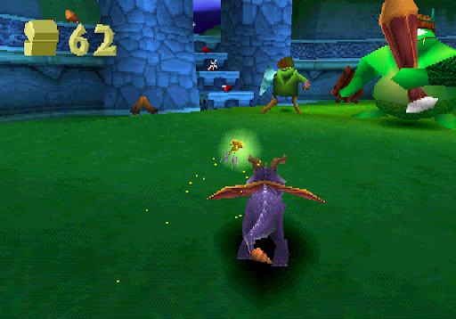
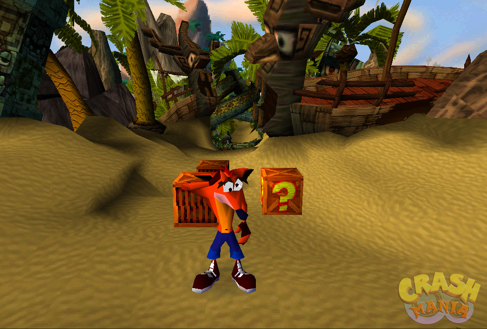

University Final Year Project - Development Blog
Over the course of the final year in my Games Design degree, I've developed a 3D platformer game prototype.
As a solo project, I've had to work in many areas like UI, Asset Development, Animation etc.
However, the focus of the project from the start has been on the roles of Design and Scripting,
so for my blog I'll mostly only be covering those elements.
I've broken things up into a few main topics, which you can skip around to from here:
PSX-inspired Rendering in Unreal
For this project, I had the specific goal of wanting to recreate a visual style inspired by early 3D games of the PS1 era. Of particular inspiration were platformers like Spyro The Dragon or Crash Bandicoot.


However, in modern game engines like Unreal or Unity, this isn’t a straightforward task.
Modern rendering pipelines have changed drastically from the ones used by games on 6th generation consoles,
meaning that certain desired visual artifacts are either not available as built-in options or require faking with post-process effects.
Unreal Engine in particular also comes with a vast array of advanced rendering features enabled by default (Temporal Anti-Aliasing, Lumen, Nanite etc.)
that are either unnecessary or would interfere with this kind of visual style.
After researching the rendering techniques used in these old games,
I decided on the following list of effects that I felt were core to the visual style I wanted to create:
- Lowered Screen Resolution
- Gouraud Shading
- Nearest-Neighbour Texture Filtering
- Vertex Quantization
- Dithering
- Vertex Coloring
For this blog, I'll go over the effects that involved extra research or more complicated solutions to implement.